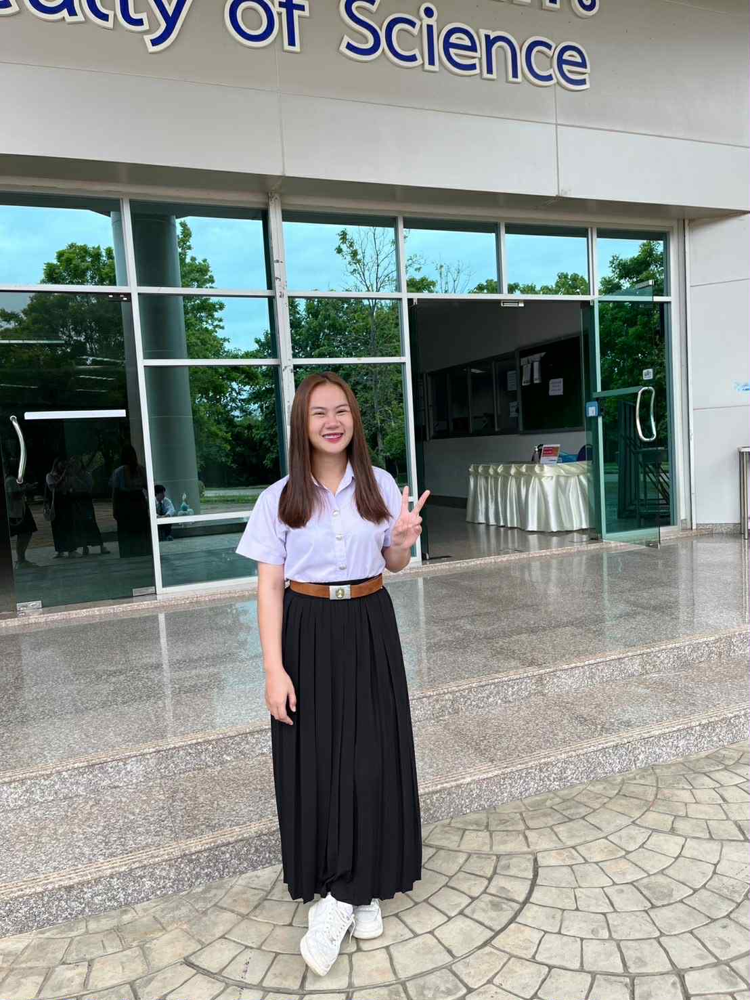

ภัทรญาดา วงษ์เพชร
นักศึกษาปี 3 สาขาเทคโนโลยีสารสนเทศ
มหาวิทยาลัยราชภัฏอุดรธานี
สนใจด้าน AI, Web Development, Cybersecurity, Data Science
💡 ทักษะ (Skills)
- Programming: Python, Java, HTML/CSS, JavaScript
- AI & Data: TensorFlow, scikit-learn, Power BI, SQL
- Tools: Git, VS Code, Figma, Google Colab
- Soft Skills: การสื่อสาร, การทำงานเป็นทีม, การแก้ปัญหา
🚀 ผลงานที่ผ่านมา (Projects / Portfolio)
- 🌐 เว็บไซต์ระบบจองห้องประชุมออนไลน์ (Web Project)
- 🤖 ระบบทำนายโรคเบาหวานด้วย Machine Learning (Data Project)
- 📊 Dashboard วิเคราะห์ข้อมูลร้านกาแฟ (Data Visualization)
ลิงก์ไปยัง GitHub Repository:
github.com/username
การศึกษา
โรงเรียนชุมชนคำตานาหนองกุง ระดับประถมศึกษา
โรงเรียนหนองหานวิทยา ระดับมัธยมศึกษา
คณะวิทยาศาสตร์ สาขาเทคโนโลยีสารสนเทศ
มหาวิทยาลัยราชภัฏอุดรธานี
พ.ศ. 2566 – ปัจจุบัน
🏆 กิจกรรมและผลงานอื่น ๆ (Activities / Achievements)
กิจกรรมอบรม DL
🎯 องค์ประกอบเสริม (Career Interest)
มุ่งมั่นพัฒนาทักษะด้าน AI และ Data Science เพื่อนำไปใช้ในอาชีพสายเทคโนโลยีและนวัตกรรมในอนาคต